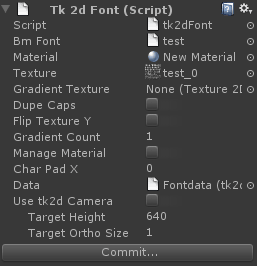

Documentation
Script Reference
Forum
Documentation
Script Reference
Forum

BMFont - Drop your BMFont here. The system supports both text and xml BMFonts.
Material - Default material used by this BMFont. From version 1.51 it is not necessary to create a material before creating a TextMesh.
Texture - Texture created by BMFont.
Gradient Texture - Optional texture for gradient fills. You can have more than one gradient per texture and select the gradient for TextMeshes without breaking dynamic batching.
Dupe Caps - Tick this when you only have caps or lower case characters exported in your BMFont. This is useful when you want to maximize texture space, and don't need lower case / upper case characters. In that case, typing either lower case or upper case characters will map to the available characters.
Flip Texture Y - Textures generated in Hiero need to be flipped.
Num Characters - Total number of characters to import. For example, if you do not need a full ASCII set, you can set it to 128. Target Height and Target Ortho Size - See Hints and Tips > Pixel Perfect Sprites and Fonts.
Gradient Count - The number of gradients laid out horizontally in your gradient texture. The texture is evenly split up into GradientCount tiles, and the tiles do not have to be square.
Manage Material - Automatically create and update materials when gradients are enabled and disabled. This should be left ticked unless you wish to modify shaders in the TextMesh. If you do not have this ticked and enable gradients, you will need to manually pick an appropriate shader.
Char Pad X - Increases spacing between characters. This may be negative to reduce the character spacing.
Use tk2d Camera - Tick this when this font is only going to be used with tk2dCameras. When ticked, textmeshes using this font will be created pixel perfect when a tk2dCamera is active.
Commit - Commits changes to this Font object.